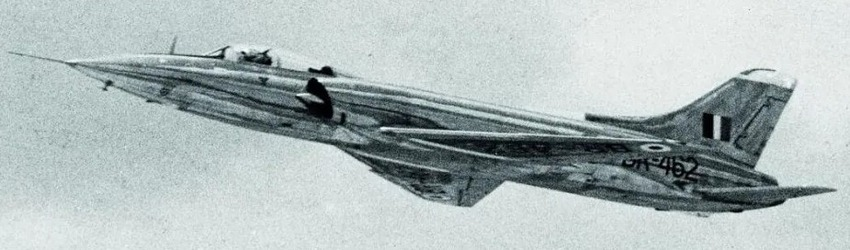
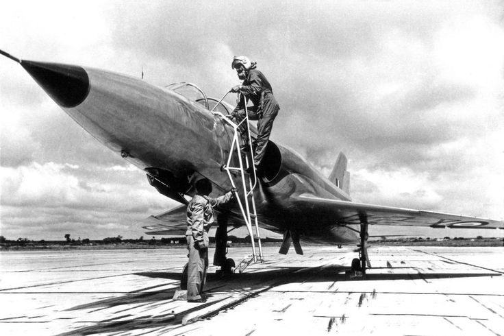
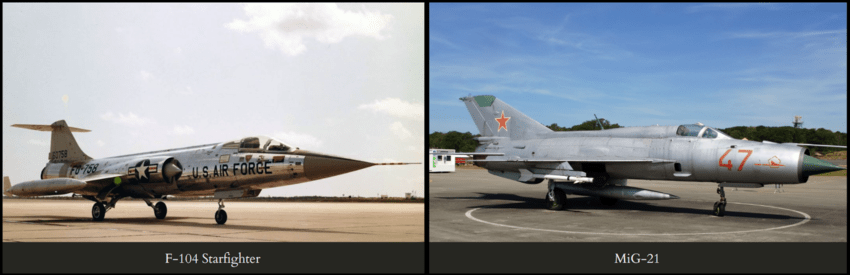

The Marut
The HAL HF-24 Marut, often referred to as the "Marut," is a notable milestone in India's aviation history as the country's first indigenous jet fighter-bomber. The Marut made India become the first asian country in 1961 to make an indigenous fighter jet. Designed and developed by Hindustan Aeronautics Limited (HAL), the Marut holds significance not only for its technological achievements but also for its role in shaping India's defense capabilities.
How it all begin
The story of Marut begins in Germany with a talented Nazi engineer named Kurt Tank who had designed the Focke-Wulf 190 which was a legendary figher
aircraft of its time. It was so good that it was the backbone of the german air-force with over twenty thousand units manufactured. He had also designed
the Focke-Wulf 200 Condor passenger plane which was also used by Adolf Hitler as his personal aircraft.
After the fall of Nazi Germany, the now victorious allied countries started poaching the brillian scientists and engineers behind the ingenious Nazi
innovations to make them work at their own research facilites. Declassified documents show that under Operation PaperClip and Operation Osaviakhim, thousands
of specialists were forcefully recruited by the US, USSR and Britain. Most of them were abducted at gunpoint along with their families and later recruited to
work in research facilities To make rockets, planes and weaponry. There were also special operations to kidnap experts who were likely to migrate to Spain,
Egypt and Argentina as these countries were considered as Nazi sympathizers. While Kurt Tank was under house arrest, he managed to flee to Argentina in disguise
with a forged passport given by Argentinian spies. Later, 60 of his former colleagues also followed hin and Argentinian President Juan Peron recruited them to
make their first fighter jet. He designed a state of the art aircraft but while it was in the final stages of completion in 1955, the Argentinian President
fell out of power due to a military coup, which made Kurt flee again. To continue his dream of making a supersonic aircraft, he offered a fighter jet for India
which was promptly accepted by HAL, and thus Kurt & 17 of his collegues moved to India. Due to some difficulties, Kurt worked as the Director of the prestigious
Madras Instiute Of Technology and coincidently, one of his promising students at that time was Dr. A.P.J. Abdul Kalam!
The ambitions of India
The development of the HAL HF-24 Marut was fueled by India's ambitious pursuit of self-reliance and technological advancement in the field of aviation. As an emerging nation striving to assert its sovereignty, India sought to reduce its dependence on foreign military aircraft procurement and establish indigenous capabilities. The ambitious drive for self-sufficiency in defense manufacturing and cutting-edge technology prompted the Hindustan Aeronautics Limited (HAL) to embark on the journey of creating its first indigenous jet fighter-bomber. The Marut's development represented a pivotal moment in India's post-independence history, symbolizing the nation's commitment to achieving strategic autonomy, fostering innovation, and establishing itself as a significant player on the global stage. This ambitious endeavor laid the foundation for subsequent aerospace projects, underscoring India's determination to harness its potential and secure its place in the modern world of aviation.
The requirements set by The Air Force
The Air Force gave a tough requirement that called for a Multi-role fighter capable of operating both as a high-altitude interceptor and as a low-altitude ground-attack aircraft with-
- a speed of Mach-2 (2,500 km/h)
- a flight ceiling of 60,000 feet
- an 800km radius of action.
- The plane was also expected to be adaptable as an-
- All-weather interceptor
- Advanced trainer
- Navel fighter for use abort the aircraft carrier INS Vikrant.
This was an impossibly high requirement for even the most developed countries of that time, considering that the first production plane to cross Mach-1 was introduced just five months earlier, and there were no Mach-2 capable production aircraft anywhere in the world. The requirements were set clearly with the future in mind as four years later, America's Starfighter became the first to cross Mach-2 while the Soviets crossed it an year later with their MiG-21.
The reality
With such ambitious requirements, the project began in 1956 with Kurt Tank moving to Bangalore along with 17 collegues. Upon arrival, Tank found that HAL neither had the
required personnel nor the infrastructure to take upon such a complex project. HAL's entire design department only had 54 members. Worse yet, no hanger space was available
for the construction for the of prototypes, no machine shop existed for prototype engineering, and there were no test equipment, structural test rigs or even a runway from
which the new aircraft could be flight tested. Tank quickly realized that he had to not only design an advanced supersonic fighter jet from the ground up, but had to also
establish a contemporary industrial complex capable of developing one.
In the very first week, a qualified production engineer resigned after concluding that it was not a place capable of developing an aircraft, Three more of his collegues
resigned over the next few months. Even after facing sich a huge challenge, Kurt Tank persisted and under his leadership, HAL's design department grew twelvefold and its
facilities and infrastructre were expanded massively to accomodate a project of this scale. The first year was spent in building the entire infrastructure from scratch.
Work on the jet began in 1957 and it was given the name 'Marut', which translates to 'the spirit of the wind'.
Within two years, they had already produced a fill scale glider mockup made of wood which was then towed in the air by a dakota aircraft to test the aerodynamics. Marut was
the last plane in the world to be flight tested this way.
Assembly of the first Marut begin in 1960 and it was flown for the first time in 1961 by Wing Commander Suranjan Das. After extensive structural tests, The final version of the
plane was ready by 1962.
At that time it looked like a plane ahead of its times with a state of the art aerodynamic design, high manoeuvrability and it had excellent safety features
like the failure of one engine did not damage the other. Its armament consisted of four 30mm Aden cannons that could fire 1400 rounds-per-minute, 50 MATRA-type unguided rockets, four
underwing hardpoints that could carry extra fuel tanks or air-to-ground rockets or up to 1800 kilograms of bombs.
The big problem
But there was one big problem. This supersonic plane designed to fly at a speed of Mach-2 was not even able to cross Mach-1.
The problem was not with the plane but with the engines.
The Marut was planned to be powered by a pair of British-designed Bristol Siddeley Orpheus-12 afterburning engines which were under development at that time for Gnat-Mark-2 and a NATO light fighter.
So, Marut was temporarily using an older Orpheus-703 non-afterburning engine that produced 44% less power In a turn of events, NATO canceled the aircraft for which this engine was being developed
for, and thus they pulled the funding for this engine. The manufacturer asked India to underwrite the engine development costs of 1.5 million pounds which the Indian government refused and hence,
this engine was never developed leaving the Marut without the engines it was designed around. 1.5 million pounds or 2 crore rupees was not a large sum by even the standards of the 1960s but it may have
looked like an outrageous amount when compared with the cost of development of the entire aircraft till that point which was just 4 crores. This short-sighted decision wrecked the entire project as it initiated
a lengthy and frustrating search for an alternative engine.
Soviets offered RD9 engine which was found to be technically suiting but required extensive modification and Soviet engineers refused to guarantee anything more than Mach-1.4 speed while India insisted
that it needed Mach-2 as Pakistan had just received Lockheed Starfighter from the US which had a speed of Mach-2. Later France offered its ATAR-9 turbojet engine which was used in the likes of
Dassault Mirage and Super-Etendard and had 60% more power than what Marut needed but India reportedly showed no interest.
At that time, Egypt was also trying to build a similar supersonic fighter led by another legendary Nazi aircraft designer - Willy Messerschmitt who had designed the World's first operational jet
fighter, the Me-262, and the infamous BF-109 which is the most produced fighter in history. He had escaped to Spain after the war where he had started making a fighter jet for them but due to
spiraling costs and cheaper American alternatives, Spain canceled the project.
Last hope
Egypt which was eager to build its own fighter jet in the fear of sanctions saw this as an opportunity and acquired the entire project along with the equipment and employees from Spain.
They were also temporarily using the same Orpheus 703 engine, but Egypt had decided to build their own engine from scratch and had recruited Ferdinand Brandner who was a legendary engine
designer of Nazi Germany.
After the war, while trying to flee to Prague, Ferdinand was captured by the Soviets. Then he worked in the Soviet Union for a few years, building engines for them including
the most powerful turboprop engine in the world until he escaped to Austria.
By 1965, Egypt was spending more money on designing this aircraft using foreign talent than their total investment in
its entire civilian industry. And, when Bradner learned India was also building a similar plane, he came to India, met Tank and negotiated a deal under which India will share the engine development
cost and also provide two test pilots. This was because Egypt did not have any capable test pilots and they were unable to hire anyone from elsewhere.
In 1966, a Marut was taken to Egypt along with a 30 member HAL team. They fitted it with their engine and conducted nearly 100 test-flights, but at that time tensions were rising between Israel
and its neighbouring Arabian countries after Egyptian president in an act-of-war blocked Israel's access to the Red Sea and mobilized their army.
Spooked by this, Israel launched a preemptive
strike in which 90% of Egyptian aircraft were bombed while on the ground including a plane used for testing the engines. After that Israel captured large swaths of land and then forced for a
peace agreement. The Indian team came close to being hit and had to return immediately leaving Marut behind.
In the aftermath of the war, Egypt needed a new air-force fast and could not afford
to pour more money into a long drawn out fighter jet program and thus the project was cancelled and they immediately purchased Mig-21 from the Soviets. The Indian government made no attempts to
either acquire the engine or the engine development team thus losing the entire investment.
Marut in the war
In 1962 Chinese President Mao Zedong was facing a huge public protest over his poor agricultural policies that resulted in the largest famine in human history which killed over 50 million people.
To create a huge distraction and to unite the public against a common external enemy, he started a war with India which had a very friendly relation with China at that time. This surprise war
spooked India to the core, and due to the urgent need to beef-up the airforce, India bought Mig-21 interceptor and Sukhoi-7 ground attack aircraft from the Soviets in thousands of quantities.
Both of them were Mach 2 capable and competed in the same roles as Marut thus killing the need for this project. Without being able to find a suitable engine, and without much political interest,
many of the intended features of Marut were cancelled and it was handed over to air-force in 1967 while still being fitted with its temporary engine. The air-force reluctantly purchased 147 Maruts
as they considered it to be only marginally superior to their existing fleet of Hunter aircraft. Kurt Tank left HAL the same year and returned to Germany.
In the 1971 Bangladesh liberation war,
the Marut remained in the thick of the action, strafing airfields, bombing ammunition dumps, and hitting tanks and artillery on the frontlines, cementing its position as a capable ground-attack
aircraft. Several Maruts managed to return to base on just one engine after the other was shot up. The jet's flight controls were designed to revert to manual control automatically if the hydraulic
system failed, and many flew home safely after the hydraulics were shot out. Major Bakshi of 220-squadron even scored an air-to-air kill of a much superior Pakistani F-86 Sabre. No Marut was lost
in air-to-air combat but three were lost to enemy ground fire.
The Marut proved its mettle by playing a key role in the legendary battle of Longewala in which a brigade of 3000 Pakistani soldiers
accompanied by 40 tanks attacked India at midnight intending to capture large swaths of territory. However, they were stopped by a small border post guarded by just 120 Indian soldiers who had
just one jeep mounted recoilless gun and 10 camels. At that time the Indian Air force did not have night flying capability, so these soldiers had to hold their position till morning and to
everyone's surprise, they were able to not only defend themselves but were able to destroy 12 Tanks with their jeep mounted recoilless gun and also cause huge Pakistani casualties. At sunrise a
squadron of Maruts accompanied by 4 Hawker Hunter aircraft started raining fire upon the Pakistani formation. Without effective air support from the Pakistani air force, the tanks and armoured
vehicles were sitting ducks to the Maruts and many attempted to run back to Pakistan. India did not push home the advantage and allowed them to flee. At the end of the battle, Pakistan lost more
than 200 soldiers, 36 tanks and over 100 vehicles while India lost just two soldiers, one jeep and five camels. This outcome is particularly remarkable as Indian aircraft did not have guided
anti-tank missiles that give modern ground-attack planes high lethality. At the end of war, 93000 Pakistani soldiers surrendered and a new country - Bangladesh was born.
The end of Marut
There were several proposals to make a second version of Marut with better engines and features. Even Kurt Tank had proposed an aircraft called HF-73 with the British Rolls-Royce
RB199 engines which were three times as powerful as the current engine. But later, access to this engine was denied due to concerns that India may end up building a better aircraft
than the western alternatives.
By then everyone had realized that it was more profitable to sell India fighter jets rather than selling just the engines and enabling India to become
a future competitor. India had set up its own engine research organization called GTRE in 1959 which tried several times to modify the existing engines to gain more power.
In 1970,
while testing a reheated version of the engine which had 25% more power, India's foremost test pilot Group Captain Suranjan Das met with a fatal accident when his canopy malfunctioned.
Although the accident was not caused by the improved engine, this incident caused the cancellation of any further engine development.
The Marut did not have advanced sighting systems or
cutting edge navigation systems or powerful engines but it did get the job done in the ground attack role. Moreover, being an indigenous design, it presented scope for further growth
with no Intellectual Property Rights or technical roadblock. Despite its inherent potential to form the foundation of a robust indigenous aircraft industry, Marut was withdrawn from service
in 1982 and no further versions were made. The Air-force instead went on to buy the British built Jaguar and Soviet-built Mig-23.
By the time India decided to make Tejas - the second
fighter jet in the late 1980s, the skills and experience gained from this project was lost due to lack of continuity and they had to start from scratch again. It would not be unfair to
say that for want of an engine, an industry was lost.